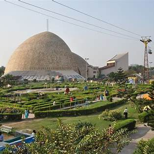
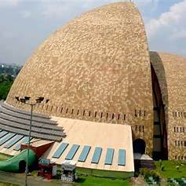
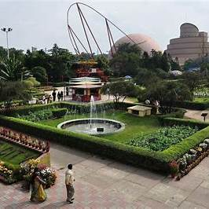
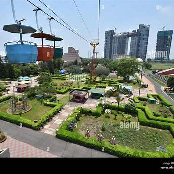

About Science City




Kolkata Science City, located at the intersection of Eastern Metropolitan Bypass and J. B. S. Haldane Avenue in East Topsia, is the largest science center in Asia.Managed by the National Council of Science Museums (NCSM), it offers a diverse range of interactive exhibits and attractions suitable for visitors of all ages.
Key Attractions: Dynamotion Hall: Features hands-on exhibits on various scientific topics, including illusions, powers of ten, a freshwater aquarium, and a live butterfly enclave.
Earth Exploration Hall: A two-story hemispherical building displaying details of the southern and northern hemispheres, highlighting physical geography, flora, fauna, and dynamic natural phenomena.
Space Odyssey: Includes a Space Theatre with a Helios Star Ball planetarium, 3-D Vision Theater, Mirror Magic exhibit, and the Time Machine motion simulator for virtual space experiences.
Science Park: An outdoor area with interactive exhibits on physical and life sciences, featuring a caterpillar ride, gravity coaster, musical fountain, road train, cable cars, monorail cycle, butterfly nursery, and a maze.
Science Exploration Hall: Opened in 2016, this 5,400-square-meter building offers inquiry-based learning in sections like Emerging Technologies, Evolution of Life, Panorama on Human Evolution, and Science and Technology Heritage of India.
Visiting Information: Timings Open daily from 10:00 AM to 7:00 PM; ticket counters close at 6:00 PM.
Details
Location : J. B. S. Haldane Avenue East Topsia Kolkata, West Bengal 700046 India
Phone : 2285 4343 / 2285 1572 / 2285 2607
Email : sciencecity.kol@gmail.com